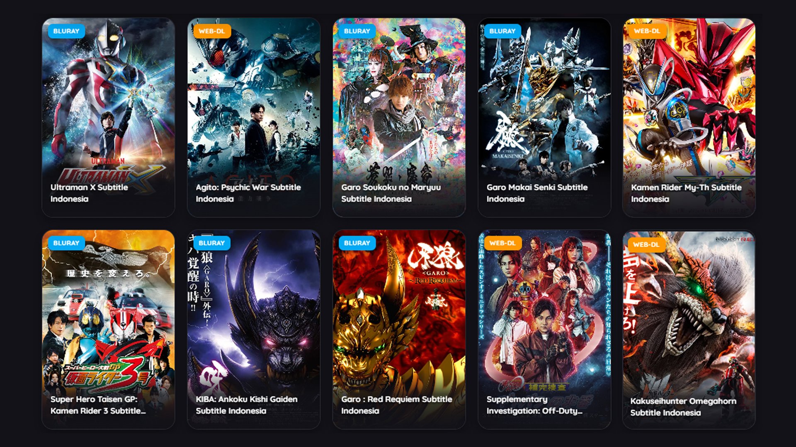
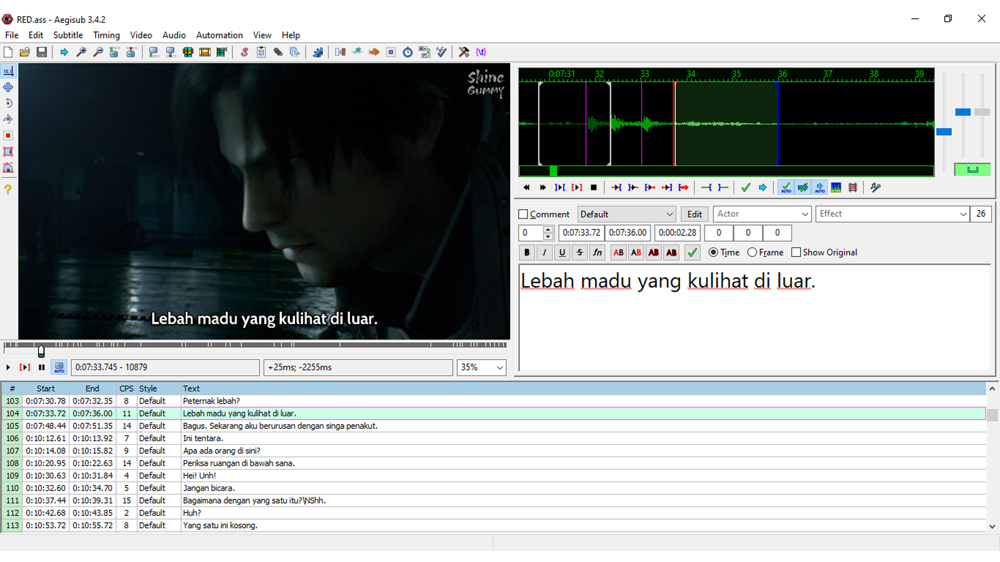
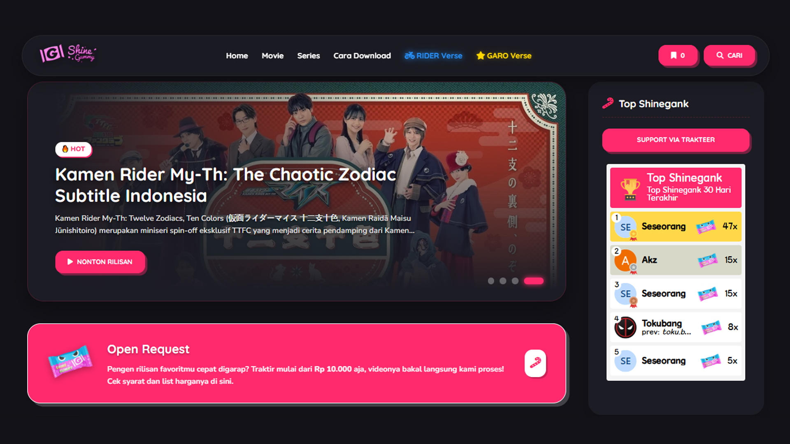
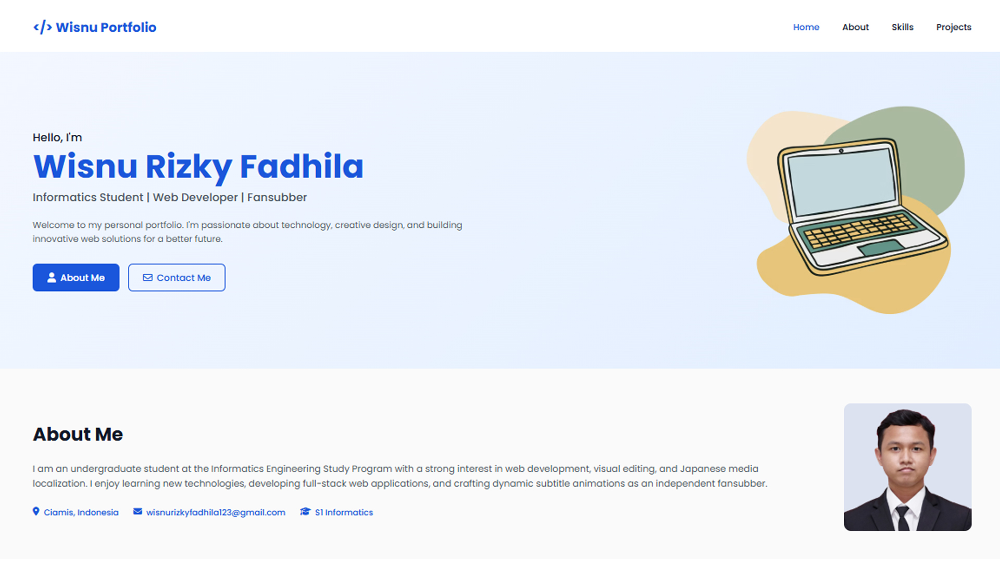

Hello, I'm
Wisnu Rizky Fadhila
Informatics Student | Web Developer | Fansubber
Welcome to my personal portfolio. I'm passionate about technology, creative design, and building innovative web solutions for a better future.

Hello, I'm
Welcome to my personal portfolio. I'm passionate about technology, creative design, and building innovative web solutions for a better future.
I am an undergraduate student at the Informatics Engineering Study Program with a strong interest in web development, visual editing, and Japanese media localization. I enjoy learning new technologies, developing full-stack web applications, and crafting dynamic subtitle animations as an independent fansubber.

Indonesian localization and advanced ASS typesetting for various Japanese series.
View Project →
A custom web generator for ASS tags styling and dynamic text animation effects.
View Project →
A custom Blogspot template design featuring Trakteer top supporter widget integration.
View Project →
A responsive personal portfolio website built with HTML, CSS, and modern UI design principles to showcase my projects.
View Project →